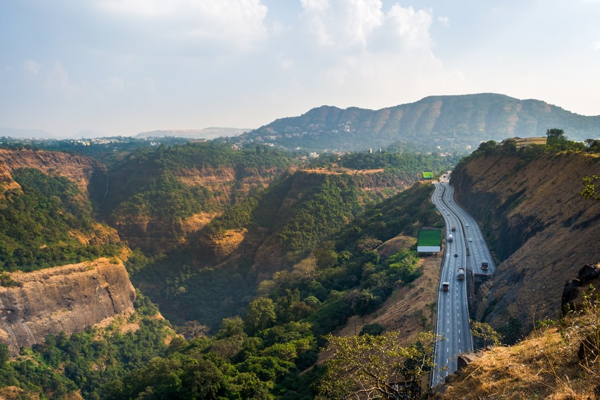

Introduction
Lonavala, a popular hill station in Maharashtra, is renowned for its lush green valleys, misty hills, and breathtaking waterfalls. Nestled in the Sahyadri range, it serves as an ideal getaway for nature lovers, adventure enthusiasts, and peace seekers.
Lonavala is a popular hill station located in the Pune district of Maharashtra, India. It is known for its lush green valleys, waterfalls, and pleasant climate, making it a perfect getaway from city life.
The town is famous for tourist attractions such as Bhushi Dam, Tiger's Leap, Karla Caves, and Rajmachi Fort. Visitors also enjoy trekking and exploring the scenic surroundings.
Lonavala is well known for its chikki, a traditional sweet made from jaggery and nuts. The best time to visit Lonavala is during the monsoon season when the waterfalls and greenery are at their peak.
Visitor Information
Famous Attractions: Tiger’s Leap, Bhushi Dam, Rajmachi Fort, Karla and Bhaja Caves, Duke’s Nose.
Activities: Trekking, camping, nature walks, and enjoying the local chikki sweets.
How to Reach
By Road: Lonavala is well connected via Mumbai-Pune Expressway, making it a convenient drive from both cities.
By Rail: Lonavala Railway Station is a major stop for trains traveling between Mumbai and Pune.
By Air: The nearest airport is Pune International Airport (approximately 70 km away).
Famous Food in Lonavala
Chikki – A crunchy sweet made of jaggery and nuts, famous in Lonavala.
Corn Pakoras & Bhajiyas – enjoyed during monsoons.
Key Attractions
Karla & Bhaja Caves: Ancient Buddhist rock-cut caves with intricate carvings and stupas.Lonavala Lake: A serene lake ideal for relaxation and photography.
Pawna Lake: A popular camping and boating destination near Lonavala.
Duke’s Nose: A viewpoint resembling the nose of the Duke of Wellington, famous for trekking and rock climbing.
Ryewood Park & Garden: A peaceful park with tall trees, ideal for nature lovers.
Ekvira Devi Temple: A temple dedicated to Goddess Ekvira, located near Karla Caves.
Lion’s Point: Another viewpoint offering mesmerizing sunset views.
Best Time to Visit
The best time to visit Lonavala is during the monsoon (June - September) when the greenery is at its peak, and waterfalls are in full flow. Winter (October - February) is also great for a cozy retreat.
Location
Gallery
